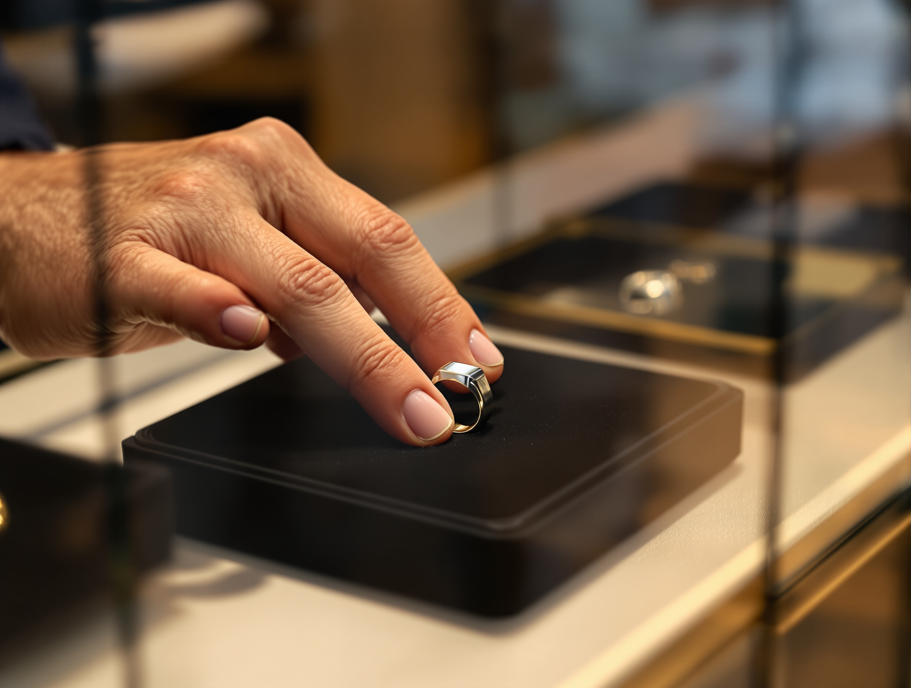
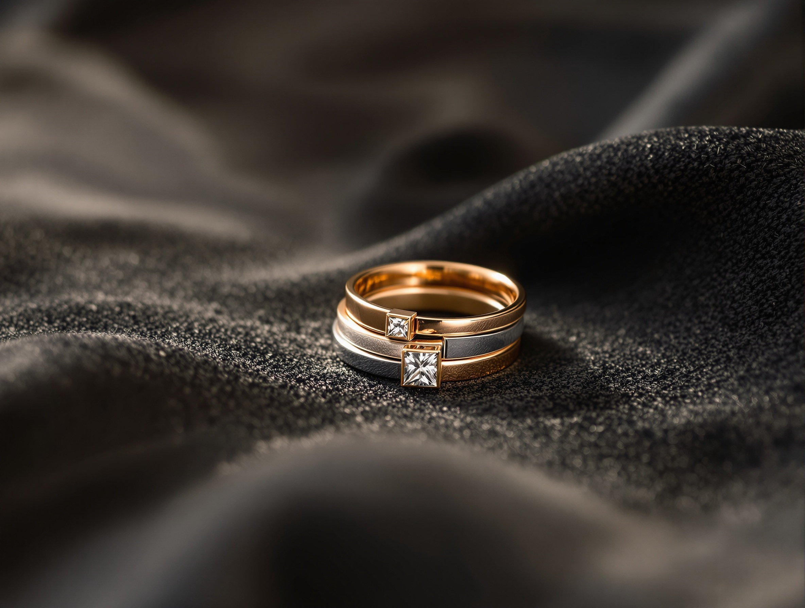
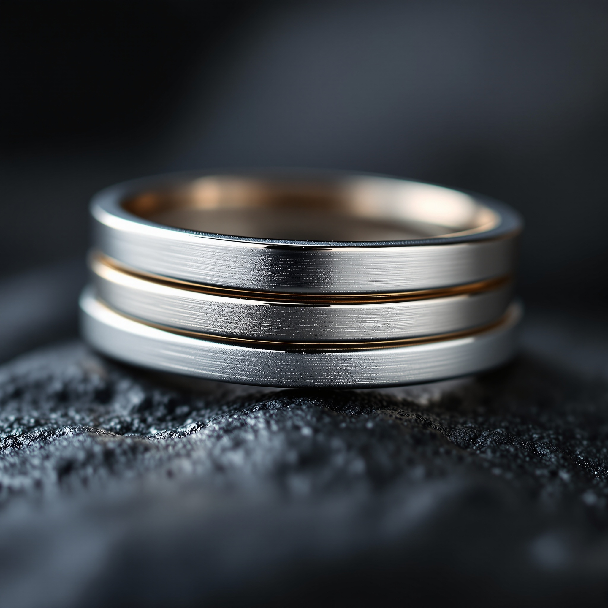
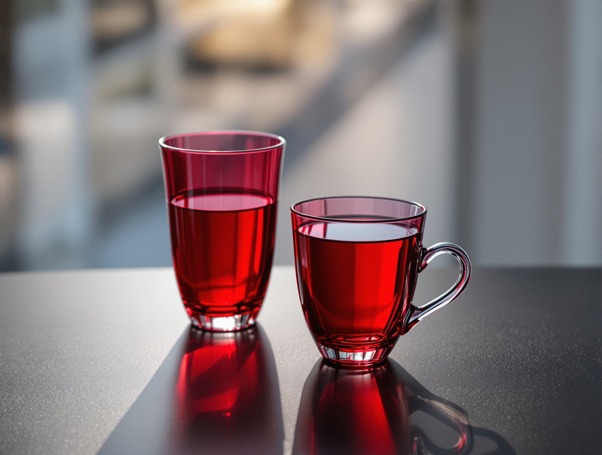
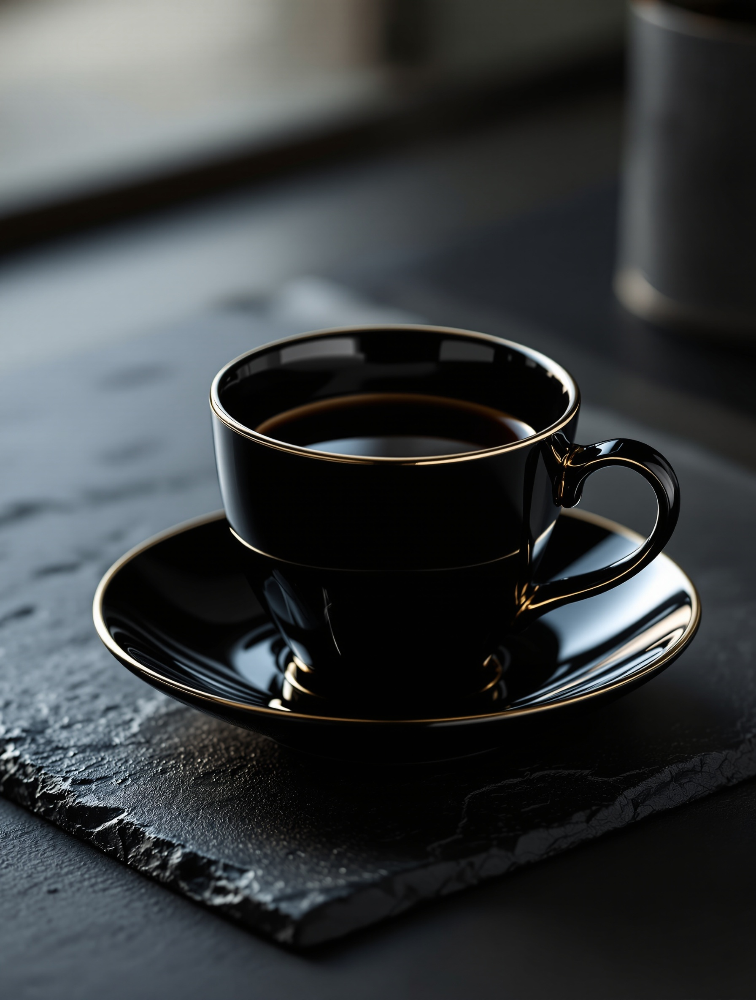
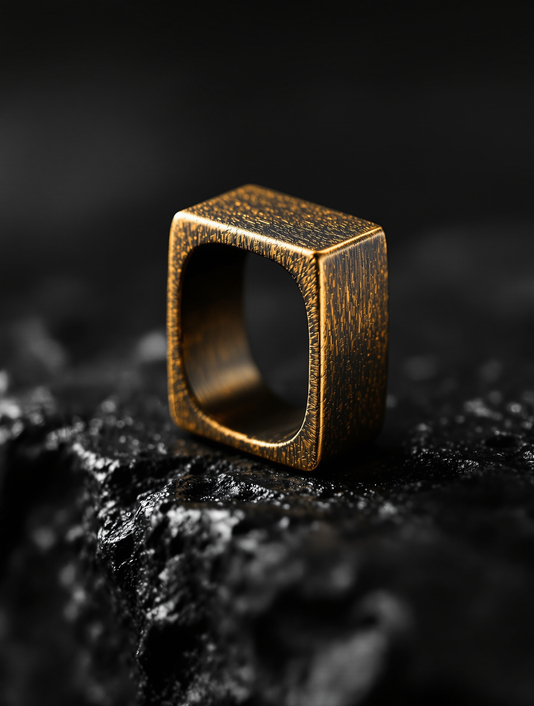
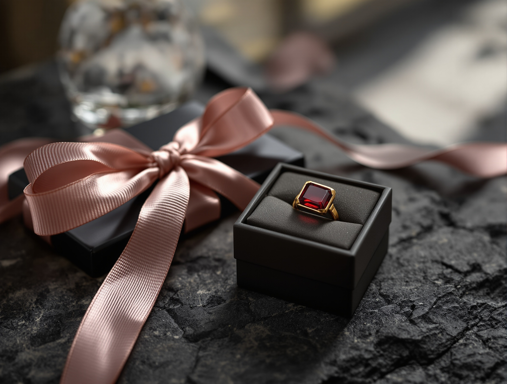
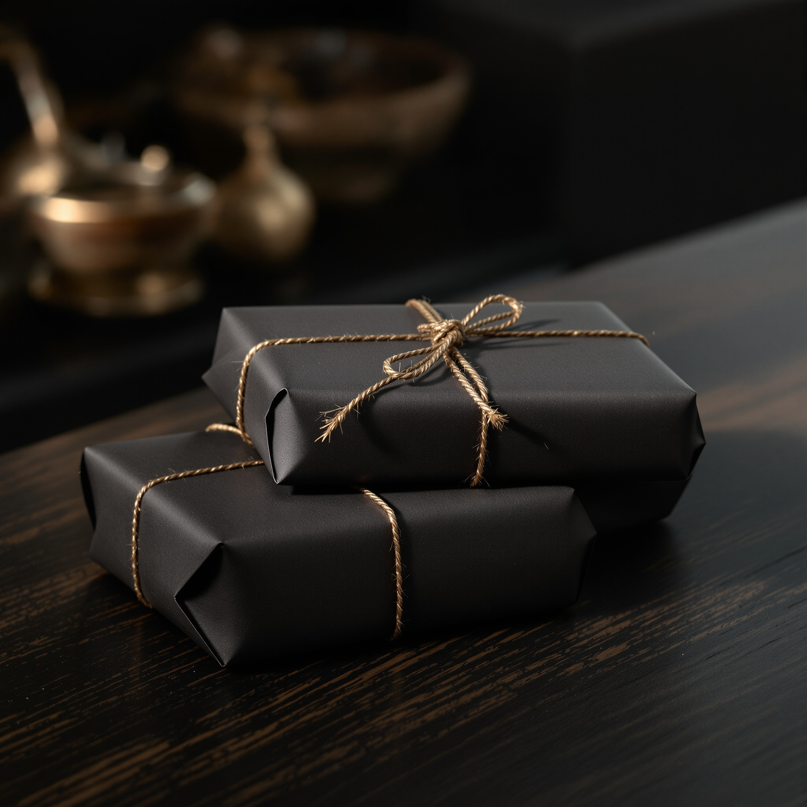
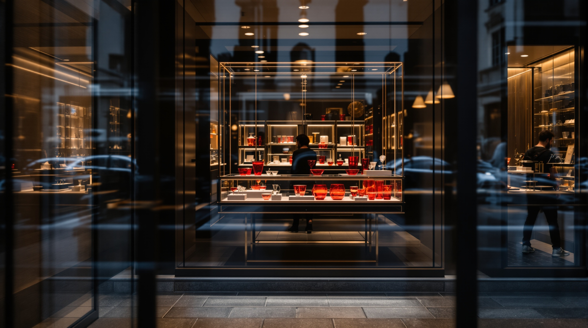

Confezione dono
Il pezzo scelto, avvolto nella nostra carta scura e chiuso con cordoncino bronzo. Pronto da consegnare.
da 8 €indicativo, su richiestaUn atelier. Due mondi, una sola mano.
Gli anelli quadrati di Laura Contri e i bicchieri Ruby glass soffiati a mano, curati sotto un unico tetto. Scegliamo il pezzo, lo confezioniamo, lo spediamo ovunque.

L'Atelier
Non siamo un negozio di stock. La Corte è un atelier: scegliamo, componiamo e firmiamo ogni pezzo, dal gioiello alla tavola. Chi entra compra l'autografo di chi lo ha fatto, non una scatola qualunque.
Da un lato gli anelli quadrati di Laura Contri. Dall'altro i bicchieri e le tazze soffiati a mano. Una stessa geometria — il quadro — li tiene insieme.
I Gioielli · Laura Contri
Bronzo e argento lavorati a mano, con lo spigolo quadrato che diventa la nostra firma. Ogni anello porta il nome di Laura Contri: una geometria sobria, pensata per essere indossata ogni giorno.




La Tavola
Vetro soffiato e porcellana, nei rossi del Ruby glass e nei neri con filo di platino. Lo stesso quadro degli anelli torna nel Deco Quadro: la tavola parla la lingua dell'atelier.
Il Quadro
Il quadro non è un ornamento: è il filo che dimostra che gioiello e tavola escono dalla stessa mano.

Lo spigolo quadrato è la firma dei Square Ring: netto sul bronzo, vivo sull'argento.
Lo stesso quadro torna inciso nel Deco Quadro Black, dal metallo al vetro soffiato.
Una geometria coerente: due mezze collezioni che leggono come una sola boutique.
Il Dono · Bomboniere
Scegliamo con voi il pezzo — gioiello o tavola — e lo prepariamo come confezione o bombonière. Un solo interlocutore, dalla scelta al pacco.
Il pezzo scelto, avvolto nella nostra carta scura e chiuso con cordoncino bronzo. Pronto da consegnare.
da 8 €indicativo, su richiestaPer nozze e ricorrenze: piccole serie coordinate di anelli o vetri, confezionate una a una.
su misurapreventivo in atelierCi dite l'occasione e il destinatario: componiamo noi il pezzo giusto e lo spediamo ovunque.
da 15 €confezione + spedizione a parteAggiungiamo un biglietto scritto a mano con il vostro messaggio, incluso in ogni confezione dono.
inclusoin ogni confezione
Spedizioni
Vendiamo in atelier e online. Ogni pezzo parte imballato con cura, con la stessa attenzione con cui lo confezioniamo.

Visita & Contatto
